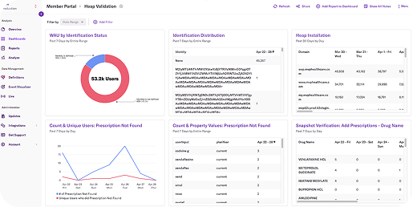
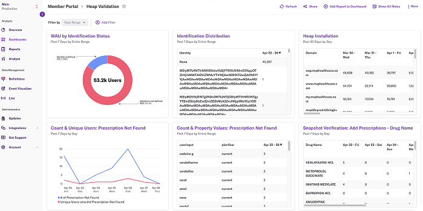
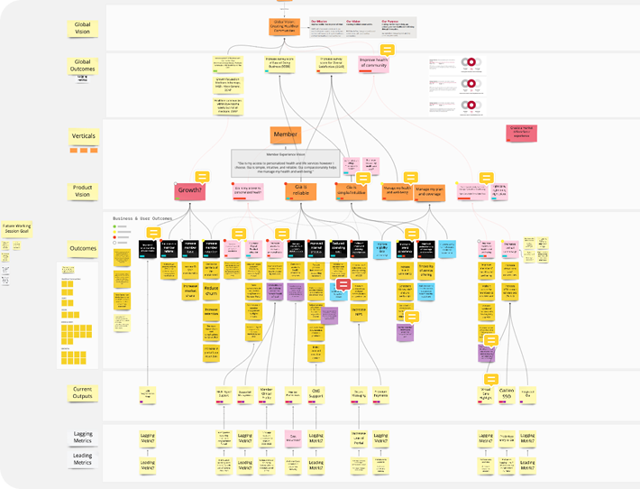
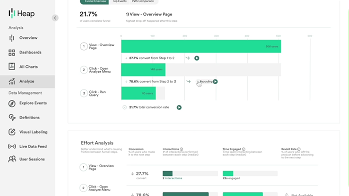
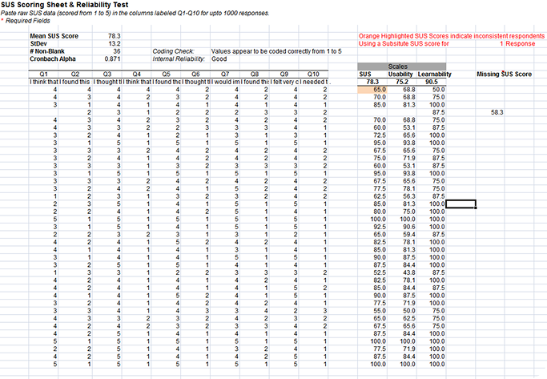
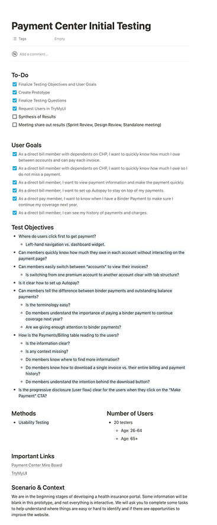

MVP HEALTHCARE
PLAN RECOMMEDATION TOOL

Please note: some images are lower resolution, as they were the only assets I could retrieve after the project's completion. The original high-resolution files were no longer accessible at the time. My apologies for the poor quality images.
INTRODUCTION
MVP Health Care is a not-for-profit health insurer serving individuals and businesses across New York and Vermont. As an HMO-POS, PPO, and Medicare Advantage organization, they operate in a space where clarity and trust are everything. Their Plan Recommendation Tool, known as the PRT, helps new and existing members quickly identify the right health plan for the upcoming year based on their known medical needs.
I was brought in to lead their quantitative research efforts, mature their measurement practice, and drive meaningful improvements to the PRT and Payment Center products.
EXECUTIVE SUMMARY

This engagement was a deep dive into the world of UX quantitative research. While most of my projects blend research and design equally, MVP was an opportunity to go further into the analytical side of UX than I had before, and to demonstrate what a mature measurement practice looks like in a healthcare context.
I introduced research frameworks, built analytics dashboards, educated stakeholders on quantitative principles, and delivered design interventions that quadrupled the PRT's conversion rate. Along the way I became a trusted research advisor to the client and laid the groundwork for a measurement practice that would outlast my engagement.
Core Disciplines: UX Strategy, Quantitative Research, Goal Tree Mapping, Analytics Implementation, Survey Design, Usability Studies, Design, Mentorship
LEARN
Understanding the Business
Every engagement starts with understanding what the business is actually trying to accomplish. At MVP, that meant facilitating Goal Tree Mapping workshops to connect the PRT's product objectives to the organization's higher-level corporate goals.
This exercise accomplished more than alignment. It gave us a framework for identifying which metrics actually mattered, separating the ones that would tell us something meaningful about user behavior and product health from the ones that would simply generate noise.


Building the Analytics Foundation
Once I understood the business goals and identified the KPIs that mattered, I got to work building Heap Analytics dashboards that gave MVP stakeholders real-time visibility into user behavior and product performance.
But delivering dashboards was only part of the work. I also spent significant time educating the client team on the quantitative principles required to interpret data responsibly. Topics included statistical significance, standard deviation, z-scores, confidence intervals, correlation and regression analysis, and forecasting. For many stakeholders this was their first meaningful exposure to these concepts in a UX context.
The impact went beyond the PRT. MVP's appetite for quantitative research grew throughout the engagement, and leadership began pushing to extend this measurement practice into their Employer, Broker, and Provider product portfolios.
BUILD

Introducing Measurement Surveys
With the analytics foundation in place I introduced two established UX quantitative research surveys as intercept tools on the PRT: the System Usability Scale (SUS) and the Usability Metric for User Experience (UMUX-Lite).
SUS measures perceived usability through 10 Likert-scale statements, producing a score between 0 and 100. UMUX-Lite distills that further into four focused questions about ease of use and likelihood of recommendation. Together they gave MVP an ongoing, lightweight mechanism for capturing user sentiment without disrupting the experience.
I also conducted NPS analysis at MVP's request. While I had reservations about NPS as the right tool for this particular scenario, I delivered a thorough analysis and recommended enhancements including a qualitative follow-up question and strategic placement of product promotion links.
Design Intervention
Informed by the research and analytics findings, I delivered design updates to both the PRT and the Payment Center. Each intervention was grounded in what the data was telling us about where users were struggling and where opportunities existed to reduce friction and improve conversion.
TEST
Unmoderated Usability Studies
For the Payment Center I conducted unmoderated usability studies via Trymata to validate the design direction and identify any risks before changes went live. The studies surfaced substantial risks tied to a third-party vendor integration that had not been visible through analytics alone, confirming that no single research method tells the whole story.
Identifying Blind Spots
One of the more significant findings of the engagement was the discovery that MVP had no visibility into user behavior beyond the PRT itself. A third-party vendor integration created a measurement gap that left a critical portion of the user journey completely untracked. Surfacing this blind spot and advising the client on how to address it was one of the quieter but more impactful contributions of the project.

ITERATE
Mentorship & Continuity
One of my priorities toward the end of the engagement was ensuring that the work would continue after I left. I mentored a junior UX resource, sharing research methodologies, analytical frameworks, and best practices so that MVP would have internal capability to sustain and build on what we had established together.
I also supported onboarding designers during team transitions, keeping the project aligned and maintaining delivery quality throughout.
CLOSING
Last Remarks
MVP taught me that UX research is most powerful when it becomes part of how an organization thinks, not just something a consultant brings in and takes away when the engagement ends.
Quadrupling a conversion rate is a great outcome. But watching a client team internalize the value of quantitative research and ask to expand it across their entire product portfolio is the outcome that actually lasts.
Data tells you what is happening. Good research tells you why. Teaching a client to tell the difference is some of the most valuable work I have ever done.